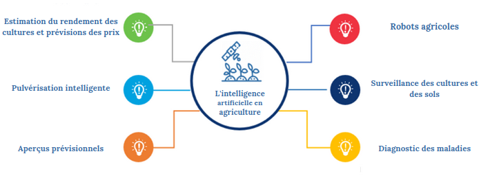
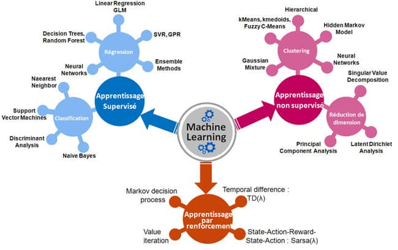

L'intelligence artificielle
L'Intelligence Artificielle (IA) est un champ de la science informatique qui vise à développer des algorithmes et des systèmes qui peuvent s'adapter et s'améliorer de manière autonome à partir des données. L'IA est devenue très importante en raison de sa capacité à traiter de vastes quantités de données et à prendre des décisions en temps réel. Elle est largement utilisée dans divers domaines, notamment dans l'agriculture où elle apporte des solutions innovantes telles que l'estimation de la biomasse, l'utilisation de robots agricoles, le diagnostic des maladies, etc. (Voir figure ci-dessous)

Le machine learning
Le machine learning est un sous-domaine de l'IA qui se concentre sur la création d'algorithmes capables d'apprendre à partir de données sans être explicitement programmés pour effectuer une tâche particulière. L'utilité du ML réside dans sa capacité à traiter et à analyser une grande quantité de données pour extraire des informations utiles et prendre des décisions plus efficaces. Dans le domaine de l'agriculture, il est souvent utilisé pour estimer la biomasse. Grâce au ML, il est possible d'analyser les données de la parcelle telles que la topographie, la composition du sol et les conditions météorologiques pour obtenir une estimation précise de la biomasse.
Il existe trois types principaux d'apprentissage automatique dans le machine learning:

Il existe de nombreux algorithmes de machine learning qui peuvent être utilisés pour l'estimation de la biomasse. Cependant, certains d'entre eux sont plus connus et plus largement utilisés que d'autres. Les modèles que nous allons explorer pour notre étude sont:
- Le modèle linéaire multiple (MLR) : est un modèle de régression qui peut être utilisé pour modéliser une réponse à plusieurs variables explicatives. Il se base sur une formule mathématique qui relie la réponse à plusieurs entrées.
- andom forest (RF) : est un algorithme d'apprentissage ensembliste qui utilise une collection d'arbres de décision pour prédire une réponse. Il est souvent utilisé pour les tâches de classification et de régression.
- Support vector regression (SVR) : est un algorithme de régression qui utilise des vecteurs de support pour prédire une réponse. Il est souvent utilisé pour les tâches qui nécessitent une précision élevée.
- XG Boost : est un algorithme d'apprentissage ensembliste qui utilise une combinaison d'arbres de décision pour prédire une réponse. Il est souvent utilisé pour les tâches de classification et de régression.
- Adaboost : est un algorithme d'apprentissage ensembliste qui utilise une séquence d'arbres de décision pour prédire une réponse. Il est souvent utilisé pour les tâches de classification et de régression.
- K-nearest neighbors (KNN) : est un algorithme de classification basé sur les plus proches voisins. Il utilise les données d'entraînement pour déterminer la catégorie d'une entrée de données en comparant ses caractéristiques à celles des données d'entraînement.
- Réseau de neurones (ANN) : est un algorithme de classification qui utilise une structure de réseau de neurones pour prédire une réponse. Il est souvent utilisé pour les tâches complexes de reconnaissance de formes et de traitement du langage naturel.
Le deep learning
Le deep learning (apprentissage profond) est une branche du Machine Learning qui se concentre sur les réseaux de neurones artificiels complexes. Le DL est devenu populaire pour sa capacité à gérer des tâches complexes, telles que la reconnaissance d'images et de la parole, grâce à des réseaux de neurones à plusieurs couches. Il peut également être utilisé pour l'analyse de données, l'estimation de la biomasse en agriculture étant un exemple de celà.
Dans le domaine de l'agriculture, le deep learning peut être utilisé pour l'estimation de la biomasse en utilisant des images de télédétection pour former un réseau de neurones qui peut ensuite être utilisé pour prédire la biomasse à partir d'images supplémentaires. Cependant, il est important de noter que les algorithmes d'apprentissage profond nécessitent souvent une grande quantité de données pour être formés, ce qui peut être un défi dans le contexte de l'agriculture.
Il existe différents types de réseaux de neurones artificiels utilisés en deep learning :
L’intérêt de l’utilisation de l’IA pour l’estimation de la biomasse
L'utilisation de l'intelligence artificielle (IA) dans l'estimation de la biomasse des sols agricoles offre plusieurs avantages par rapport aux méthodes traditionnelles. Les algorithmes d'IA sont capables de traiter de grandes quantités de données de télédétection pour fournir des cartes à haute résolution de la biomasse des sols agricoles, réduisant ainsi le besoin de traitement et d'interprétation manuels des données. En intégrant des données provenant de sources multiples, y compris l'imagerie satellitaire, la photographie aérienne et les mesures au sol, les algorithmes d'IA peuvent fournir une image plus complète de la biomasse des sols agricoles. En outre, les algorithmes d'IA peuvent utiliser des techniques d'apprentissage automatique pour modéliser les relations complexes entre les facteurs environnementaux et la croissance de la biomasse, ce qui permet d'améliorer la précision des estimations de la biomasse. Par ailleurs, les algorithmes d'IA peuvent être utilisés pour la surveillance en temps réel de la biomasse des sols agricoles, ce qui peut aider à identifier les zones de forte croissance ou de déclin de la biomasse et à soutenir la prise de décision liée à la gestion et à la conservation des sols.